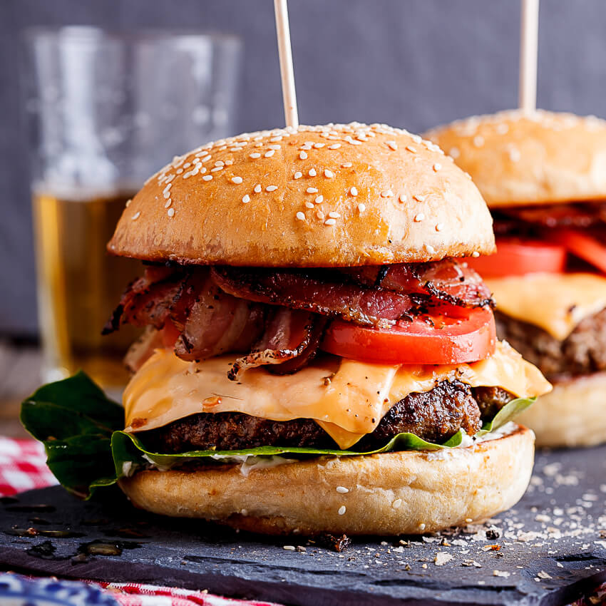

Burger

Description
Typically considered a sandwich, consisting of one or more cooked patties—usually
ground meat, typically beef—placed inside a sliced bread roll or bun.
The patty may be pan fried, grilled, smoked or flame broiled.
Ingredients
- Burger Buns
- Pre-made Burger patties or ground beef
- Lettuce
- Tomato
- Ketchup, Mustard and Relish
- Optional: Bacon, cheese, pickles
Steps
- Heat fry pan to medium, cook burger patties to your liking. Season if needed
- Broil burger buns, until golden
- If used, add cheese to the last few minutes of cooking burger patty
- Assemble lettuce on bottom bun, add burger patty, top with tomato and pickles,
then finish off the assembly with ketchup and mustard to inside of the top bun.